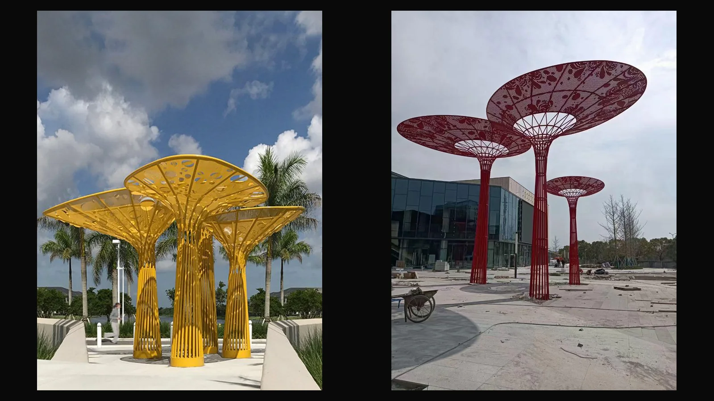
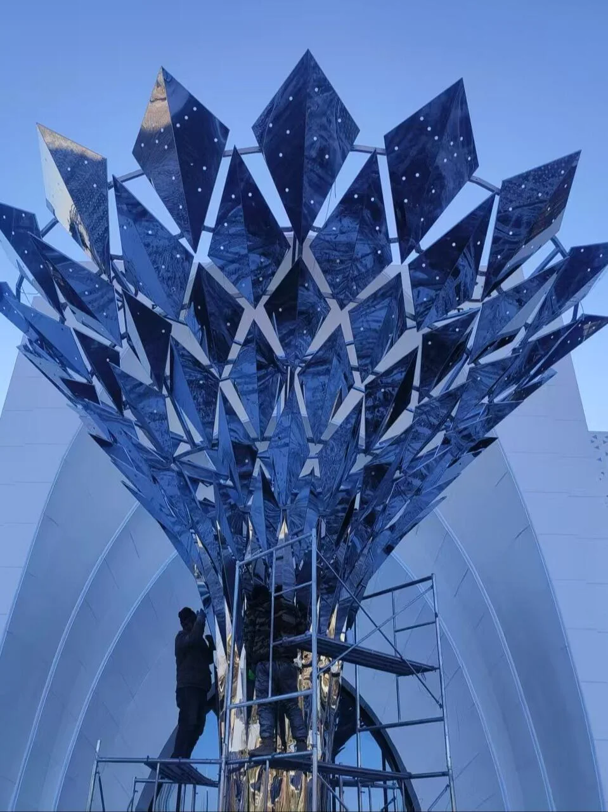
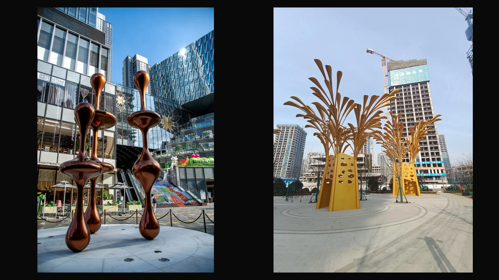

Custom resort and hotel sculpture for arrival courts and destination landscapes
WEIERYANG develops custom resort and hotel sculpture for entrance courts, porte-cocheres, water gardens, lobby-adjacent landscapes, villas, and clubs. The scope can include site and scale review, material development, structural coordination, sculpture fabrication, export packing, and overseas installation guidance.
Material and process evidence

Landscape references for canopy diameter, clear height, planting, paving, and project-programme review; project identity and supplier relationship are not asserted.

Construction-setting reference for overall height, occupied envelope, underside, and installation-access review.

Commercial-landscape references for facade, paving, approach distance, and arrival-context review; project identity and supplier relationship are not asserted.Material samples show finish direction before final sculpture quotation.
Hotel and resort locations
Hotel entrance sculpture and arrival-court landmarks
Porte-cochere and lobby-adjacent landscape art
Water gardens, pool edges and destination landscape sculpture
Design and material decisions
Approach distance, facade mass and guest circulation
Mirror or brushed stainless steel, bronze, stone and hybrid routes
Lighting, water exposure, touch, cleaning and maintenance access
Fabrication and delivery scope
Design development, approved samples and structural coordination
Workshop fabrication, trial assembly, finish review and export packing
Overseas installation guidance coordinated with the local project team
For quotation: site plans, approach photos, target scale, destination and installation date
What is included in a custom resort or hotel sculpture scope?
Depending on the commission, the scope can include site and scale review, concept development, material and finish samples, structural coordination, sculpture fabrication, trial assembly, export packing and overseas installation guidance. Final responsibilities are agreed with the local project team.
What should a hotel developer send before requesting a sculpture quote?
Send a site plan, photographs from vehicle and pedestrian approaches, target dimensions, material direction, destination country, opening or installation date, foundation information and access constraints.
Which materials work for hotel entrance and resort landscape sculpture?
Common routes include brushed or mirror stainless steel, bronze, stone and hybrid systems. The correct choice depends on climate, salt or water exposure, touch, lighting, cleaning, maintenance and the intended visual weight.
Can WEIERYANG support overseas resort sculpture installation?
The delivery route can include segmentation, trial assembly, export packing, lifting information and installation guidance for the local contractor. Site engineering and statutory approval remain coordinated with qualified local professionals.
Start a private sculpture brief
Send drawings, site photos, scale, material direction, destination country, and schedule to begin a serious review.